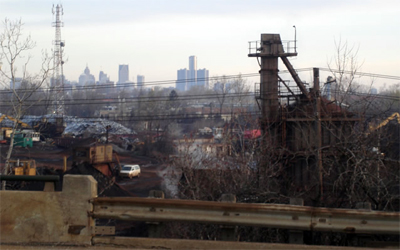

1000 DAYS OF THEORY
Detroit Digital
On Tourists in the Apocalypse
Marcel O'Gorman

Detroit skyline viewed through the
Zalev Bros. Co. scrapyard in Windsor, Ontario
This is how one pictures the angel of history. His face is turned toward the past. Where we perceive a chain of events, he sees one
single catastrophe which keeps piling wreckage upon wreckage and hurls it in front of his feet. The angel would like to stay, awaken the dead, and
make whole what has been smashed. But a storm is blowing from Paradise; it has got caught in his wings with such violence that the angel can no longer
close them. This storm irresistibly propels him into the future to which his back is turned, while the pile of debris before him grows skyward. This
storm is what we call progress.
-- Walter Benjamin, "On the Concept of History" [1]
We shall solve the city problem by leaving the city.
-- Henry Ford [2]
When the annual Computers and Writing conference descended upon Detroit City, the theme for the event, borrowed from an article by Geoffrey
Sirc, was "Virtual Urbanism." [3] As the conference web site promised, "Detroit, Michigan offers a unique
opportunity to consider the effects of rhetoric and writing on the urban experience, an experience constantly shaped and reshaped by emerging and
existing technological issues, from the birth of the assembly line at the Ford Motor Company to the introduction of techno music." [4] The rhetorical strain of this urban seduction, which links writing to techno music and automotive
manufacturing, raises some questions. What exactly does it mean to write a city like Detroit, where rates of adult illiteracy are among the
highest in the nation? Who will read this writing? The question becomes all the more poignant when computers are added to the mix. What does it mean to
write Detroit as electronic text? Such questions haunted me as I made my way through the dark, mile-long tunnel that links Windsor, Ontario with
Detroit, a city to which I was returning as a mere tourist. This Stygian tale begins here, on the border. I am the First Tourist of the Apocalypse, in
search of a body and a city.
When I was a kid, growing up in Windsor, my parents forbade me from going to Detroit. It was the dark continent, a place to be repressed. Watching
Detroit (d)evolve from across the river was like watching a slow-motion Hurricane Katrina. The waves kept rolling in, but there were no rescue 'copters
in sight -- not even police choppers. Attendees of the Computers and Writing Conference seemed intrigued, and perhaps excited, by the city's burnt-out
aura. For visitors, Detroit is a sort of mysterious archaeological site. At one panel, a speaker urged the audience to venture across the I-94
adjacent to Wayne State University's campus, and view the half-burnt buildings, crack houses and open "prairies" that were once thriving
neighborhoods. "What happened to Detroit?" one delegate asked me with a disquieting earnestness. I responded with the typical answers: auto
manufacturers began moving to the suburbs in the 50's, race-related riots broke out in the late 60s, and a glut of freeway construction turned the
city into a drive-by necropolis. Of course, this is only a fraction of the story, and he didn't need to hear it from a parasite Canadian.
In Dreaming Suburbia, Amy Maria Kenyon points to a specific moment in Detroit's history as a generative node onto the city's postwar
decline. That moment involves the shooting of three black men by police officers at the Algiers Hotel in the summer of 1967. As Kenyon suggests, the
event itself is not as scandalous as the hurricane of rumours that surrounded it. At the time, both major newspapers in the city were on strike, and
this made way for unofficial lines of communication to fill the narrative gap surrounding the events. The situation was so serious that the
mayor established a "Rumor Control Center" to handle calls from curious and paranoid citizens, most of them residents of the surrounding,
predominantly white suburbs. This unarchived discourse network, ephemerally transmitted in the lines between the suburbs and a city call center, is
precisely where I would go to answer the question of What happened to Detroit? But I can't get there. Nobody can. In reference to the net effect of
the Algiers Hotel incident, Kenyon suggests that "the only available truth was that Detroit was full of stories. They were all about lived urban
space, and they were all up for grabs." [5] The situation has changed very little since the summer of
1967. Today, we look upon Detroit in the same way as those "suburbanites who sat shocked in front of blue TV screens until downtown had become
"made safe" by federal troops. Then they jumped into station wagons, locked the car doors, and went sightseeing." [6]
Detroit, then, is a city in search of a lost narrative. Although I ended up working in Detroit for six years -- crossing the border on a daily
basis to teach "electronic critique" at the University of Detroit Mercy -- I still get the sense that I have never been to Detroit. But I have been
trying to get there for my entire life. Or maybe it's not so much that I'm trying to get "to" Detroit, but that I'm trying to "get Detroit," to
understand and possess Detroit. It is this very desire, I believe -- this possession obsession -- that motivated the rhetoric behind the Computers and
Writing conference. Detroit, city of eternal renaissance, city of empty buildings and lots, is just waiting to be written on.
The desire of philosophers and rhetoricians to possess a city is nothing new. From Plato's configuring of the polis to Walter Benjamin's
deconstruction of Paris, the theoria of rhetoric has demonstrated itself to be an envious and poor cousin to the poiesis of architecture and urban
planning. This idea was taken up most explicitly by Paul Valery in Eupalinos, a Socratic dialogue about embodiment, philosophy, and
architecture. Eupalinos, a celebrated ancient Greek architect, is most famous for engineering the Tunnel of Samos in 600 BC. Valery toys with the idea
that the Socratic dialogues pale in comparison to the tremendous act of inscription that allowed Eupalinos to burrow through a mountain in Samos.
Perhaps this sort of comparison plagued Socrates himself, rejecter of writing, and the son of a stonemason. "Il y avait en moi un architecte,"
Socrates confides to Phaedrus in Eupalinos, "que les circonstances n'ont pas achevé de former." ["There was an architect within me
that circumstances did not permit to take shape."] [7] Socrates abandoned the hands-on vocation of his
father and turned instead to a life of building cities -- and entire universes for that matter -- in the ether.
Socrates' willful selection of theoria over poeisis is the legacy of Rhetorical Studies. But like the Socrates of Valery's
Eupalinos, the Computers and Writing crowd seems to lament this lack of ground, a sentiment betrayed by their embracing of visual culture and
digital design. At the annual Computers and Writing conference, one gets the sense, as if still drunk on William Mitchell's City of Bits, [8] that an urban metropolis might be built on Blogger and Youtube, and that Detroit might be reconstructed
with XML tags. At the very least, the "ruins of Detroit" can be remixed into a new digital rhetoric. While Socrates claimed to be an ancestor of
Daedalus, his techno-theoretical descendents have Icarus written all over them. But if one wishes to be more than just a tourist in Detroit, it's
necessary to resist this flight to the code. You can't write Detroit without taking it to the streets.
Detroit is a city that inspires flight, which makes it the perfect place for an international airline hub. Motown isn't so much a destination as a
place that you leave. When the population of the city dipped below 1 million at the end of the millennium, it fell to the tune of Henry Ford's
self-fulfilling prophecy: "The city is doomed." [9] Ford's subtly racist and overtly capitalist response
to this situation loops infinitely on the soundtrack of Detroit's written history: "We shall solve the city problem by leaving the city." This is a
narrative of progress riding shotgun to racist paranoia in a getaway car headed for Bloomfield Hills. Detroit, as a long and sorry lineup of cultural
critics have ranted, is abandoned and hopeless, a scrapyard memory of the "postwar suburban ethos" [10]
that characterizes late capitalist culture. As Jerry Herron suggests in a short essay about the extinction of cities: "We are -- all of us -- not from
Detroit." [11]
And yet Detroit does have regular visitors. Steven Vogel, Dean of the School of Architecture at the University of Detroit Mercy, plays host to an
endless stream of curious academics and their students, who come as plunderers, ready for a motor city shakedown. They come to witness the crisis
of the contemporary city, and to be shocked by strange and postmodernly ironic lore, such as the fact that even dead people leave Detroit, a story
documented by Dan Pitera, Director of the Detroit Collaborative Design Center. "Every year," Pitera notes, "500 graves move from the City of Detroit
to the Suburbs" [12]. At this rate, the city will even have to drop its goth reputation as a necropolis.
But until then, it will always attract a certain type of tourist, one looking to experience at least an aura of danger in a culture where risk has
become taboo. Detroit is the ideal playground for teens and young adults suffocating in the suburbs. The Second Tourist of the Apocalypse was well
aware of this, and he launched one of the most successful musical enterprises in Detroit's post-motown era.
Packard Plastik
For a long stretch of Saturday nights in the mid-1990's, young suburbanites crossed 8-mile road and headed into Detroit's East side, packing
themselves like lemmings into the long-abandoned Packard automotive plant. They went there to get high on inner-city danger, ecstasy washed down with
Evian, and the thumping sensorium of Detroit's king of darkno, Richie Hawtin, a.k.a. Plastikman. When all the feel-good was rubbed off on the dance
floor, and the sun began to rise, they returned to the safety of their homes in So-and-So Woods and Something Hills. Plastikman was the pied piper of
apocalypse tourism. Even in 1995, after being banned from the US for 18 months for working without a permit, Hawtin bootlegged himself into Detroit to
mix and spin at underground raves. As always, beckoned by word of mouth, deftly designed flyers, and electronic airwaves, the suburban crowds swarmed
the abandoned Packard Plant. There is a certain poetry in the scene of a techno DJ working the crowd at an automotive assembly plant. Plastikman,
"mashing together" (an expression I have come to despise) deep strings, subsonic base, and an outer-space plink-plonk backbeat, is at home on the
assembly line.
This analogy will be corrected, however, by Jeff Rice. In "Twentieth Century Graffitti: Detroit Tagging," Rice suggests that the logic of the
assembly line has been replaced in technoculture by a logic of "assemblage." [13] According to Rice, who
draws on Lyotard, though not Lev Manovich, [14] "Assemblage works from that basic principle
of parataxical arrangement and opposes the ordered assembly of narrative." [15] In a move that I will
riff on throughout the remainder of this piece, Rice then suggests that Detroit, which he personifies as a halfway-house-derelict-in-reform, must stop
searching for the lost narrative and lay on the couch of Deleuze and Guattari. In short, Detroit must learn to embrace its schizoid nature and step
into the 21st century; Detroit must "see itself. . . as the embodiment of digital media; i.e. the network." [16] What Rice is proposing as a method to "save Detroit" is
both an ideological move (a recognition of an apparatus shift in information technology and space which moves us from assembly line to
assemblage thinking) as well as a practical move (residents engage with this shift in thinking in order to begin writing the city through encounters).
[17]
This two-pronged (ideological/practical) move toward assemblage and digital encounters, which is pimped to the reader as a new urban praxis, is not
a mobilization on the ground to meet the visceral decay of the city -- it's a headlong rush into a fresh, disembodied space. We shall solve the
problem of the city by digitizing the city. Writing Detroit in this case is not about recovering lost narratives and healing old wounds, it's
about digitizing and remixing the grounded and specific narratives of place to produce an off-the-hook, electronic space groove. I would like to
counter this groove with a dusty track from the archive.
In 1968, Detroit Blues Legend Joe L. Carter penned a gritty tune entitled "Please Mr. Foreman," about the woes of black assembly line workers in
Detroit. The song forecasted the fate of James Johnson, a conveyor belt loader at the Eldon Avenue Gear and Axle Plant. On the morning of July 15,
1970, Johnson refused to comply with yet another "speed-up" on the line, and as a result he was suspended. He returned in the afternoon with an M-1
Carbine and shot two foremen and a job setter. Commenting on the brutal working conditions, or "niggermation" to which Johnson and others were
subjected in 1970, Dan Georgakas and Marvin Surkin note that in the year that
James Johnson reached his breaking point, the huge Goodyear computer, located where the Chrysler Expressway intersects with the Ford
Expressway, indicated that car production for the year reached a total of 6,546,817. In Solidarity House, the international headquarters of the UAW,
the research department records showed that injuries in the auto factories that year exceeded 15,000 with an unknown number of deaths. [18]
Carter's rugged blues riff, never recorded in a studio, is to assembly culture what Plastikman's "Disconnect" is to a disembodied assemblage
culture. The following samples make the point:
| Joe L. Carter: |
Please Mr. Foreman, slow down your assembly line. |
| | Please Mr. Foreman, slow down your assembly line. |
| | You know I don't mind workin'. |
| | But I do mind dyin'. [19]
|
| Plastikman: |
i try in vain |
| | to disconnect my brain . . . |
| | i try to disinfect |
| | and sanitize my brain |
| | perhaps i won't be satisfied |
| | until i go insane |
| | disconnect |
| | disconnect |
| | disconnect my brain [20] |
An easy, predictable summary of this juxtaposition would note that the move from assembly to assemblage is a move from melancholic death anxiety to
masochistic schizophrenia. But what's more interesting than moulding Plastikman's trite lyrics into a theory of postmodernity is to watch him turn out
feedback loops during a live performance, where he makes a veritable posthuman example of himself. At Mutek 2006 in Montreal, a disappointed audience
looked on as Plastikman tried in vain to keep up with the mad, hyper-midi tool kit that he had assembled for an ultramedia spectacle. As Plastikman
fumbled with knobs, switches, and multiple computer interfaces, the audience caught a glimpse of another kind of "speed-up," one that is rooted not in
slave labour, but in ludic self-expansion, and driven forward by the challenging taunt of technological being: "go ahead, outstrip yourself." Assembly
is about physical risk; assemblage is about risking your image.
Plastikman, digital philosopher without a body, is what every computers and writing instructor wishes s/he could be -- a techno DJ with the
rhetorical finesse to mesmerize hoards of eager teenagers. For this reason, when DJ Spooky stepped to the mic in 2004 with Rhythm Science (a
few years after his mediocre reception at the Detroit Electronic Music Festival) everybody listened. And the syllabi of freshmen composition courses
will never be the same.
If I was a techno DJ -- and you know we all want to be techno DJ's -- my first thumpin' track would lay the raw, tambourine chain rattle of
Sun-Ra's "Looking Outward" over the digital plinks and plonks of Plastikman's "Disconnect." And I might sprinkle in a deep and low Sun-Ra-mulating
vocal of the following mantra: "In the midst of the battle for change, remember the rattle of chains." Sun Ra, ur-king of Afrofuturism and
self-proclaimed Saturnian son of an "Angel Race," is linked to the Detroit techno scene by way of a detour that must be traveled in George Clinton's
mothership. This afrofuturistic journey is charted in John Okamfrah's proto-surrealist cinematic gem, The Last Angel of History. Afrofuturism,
which ranges from the Egyption chants of Sun-Ra, to the funkadelic "computer games" of George Clinton, to the synthed-out TR-909 snare assault of Juan
Atkins, Derrick May, and Kevin Saunderson, presents an alternative narrative for technoculture; one that is not located in the white-skinned,
gray-bearded fortress of the military-industrial complex. Unfortunately, like the story of technoculture itself, Afrofuturism is about escape. As
Kodwo Eshun suggests in the The Last Angel of History, in the 18th century, black slaves like Phyllis Wheatley read poetry to prove that they
were human. In the 20th century, afrofuturism willingly embraced the man-machine interface. The impetus to do so, Eshun suggests, is "To get out
of here. To get out of this time/space now." [21]
This legacy of evasion is carried forward by DJ Spooky, who defines his "rhythm science" as "a mirror held up to a culture that has learned to fly
again, that has released itself from the constraints of the ground." [22] Such a fly mix of capital
consumerism and technoligarchy might even lead us to adopt as our hero "the prostitute in the assembly line." [23] To view this "abstract image" as an icon of creative emancipation, it's necessary to embrace a radical mode of disembodiment
in which the street corner and the conveyor belt have no place. But in the words of Jack White, "You can't be a pimp and a prostitute too." [24] The prostitute and the assembly line worker embody a working-class grit that has no place in the
clean, bodiless culture that has learned to fly again. [25]
Technoculture then, is above all about physical release, escape. It has its own "ethos of suburbanization." And what better place to stage an
escape than Detroit? Detroit is to American civilization what the body is to technocultural being. Detroit and the body are both things to be
repressed. We are, all of us, tourists in the apocalypse. Children of an angel race. But here's the kick-in-the-face punch line: we're angels chained
to bodies. Defecating angels. The body and Detroit are waste. Ruins. Useless meat just begging for a tattoo.
TURTL is from the burbs
On June 11, 2003, Paul Alaga and Michael Welch were arrested for practicing unauthorized mural art on a building at 2600 West Grand in Detroit.
Determined to make an example of them, Wayne County Prosecutor Michael Duggan ensured that they were charged with malicious destruction of property,
which carried a one-year sentence and a $40,000 bond. If one adheres to the rhetoric of heroism surrounding graffiti in contemporary cultural studies,
these events seem like a tragic and excessive use of legal force. Graffiti, after all, was hailed by Jean Baudrillard as the only effective mode of
response during the events of May '68 in Paris, a movement, he argues, which was otherwise neutralized by mass media coverage. "Graffiti is
transgressive," Baudrillard notes,
not because it substitutes another content, another discourse, but simply because it responds, there, on the spot, and breaches the
fundamental role of nonresponse enunciated by all the media. Does it oppose one code to another? I don't think so: it simply smashes the code. [26]
This punk rhetoric, with its seductive image of code-smashing, has informed a great deal of critical writing about the city, where graffiti is
tagged as a method for dispossessed citizens to reclaim and redefine crippled urban spaces. As Jeff Rice suggests, "'Rodeo, 'Turtl,' 'Money,' and
'Rib' sign Detroit's urban landscape as industrial writing." These artists are the inspiration for Rice's concept of 21st century tagging:
Whereas the industrial city was marked by graffiti tags, the information city is marked by the less familiar XML driven tag. . . My call
is for a plan of information tagging, where residents, working in digital spaces, reimagine the city through their own conceptualization and
actualization of tags. In place of tagging the bypass or the stop sign with graffiti, they tag the city itself as an encountered name or moment within
a digital, interconnected space. [27]
Rice's intentions here, noble, brilliant, and deftly laid out like a McLuhanesque seduction scene, hide an insidious truth about graff. What if the
graffiti exemplars that Rice celebrates, for example, are neither urban nor industrial? And what if their actions have less to do with urban
situationist resistance than they do with heroic self-promotion? This is indeed the case with Paul Alaga and Michael Welch, who traveled from their
home states of California and Wisconsin, respectively, in search of a new canvas. Their story tells us as much about graffiti as it does about blog
culture.
The arrest of Welch and Alaga, is documented in an uncompleted film called PaintCans and Politics. [28] The film follows a graffiti artist from his suburban Michigan home into the dark, steamy streets of Detroit, where he plies
his trade after midnight. While the footage of the film, much like the dETROITfUNK blog cited by Rice, portrays Detroit graffiti art as the
alphabetical architecture of a new city, the graffiti artists in the film reveal what any city cop can tell you (though maybe not in the same words):
most inner-city graffiti is a pastime for bored suburban kids. Rather than serving as a rallying cry for the inner-city dispossessed population,
graffiti marks the return of suburbia into the city, as if the outskirts return in the dead of night to piss on the territory that they once
abandoned. "Well, Detroit, like, is the field of dreams for graffiti," observes one graff artist in the film. "I mean, like, tons of abandoned shit,
much more bigger crime and stuff to worry about, I mean like, I think the people of Detroit are concerned a lot more about cars being stolen, rape,
murder, you know, and stuff like that than, like, graff." Detroit, down on its knees, full of "abandoned shit," is just begging to be written on. This
is the logic of a lunch-money bully, a musket-happy colonist, a Wall Street opportunist. Let's see how it plays out when graff goes digital.
A New Cadillac
The digital tagging of Detroit has been going on for several years now, thanks to a combination of blog culture and the mania for urban exploration
(urbex) that Detroit has inspired. The urbex crowd, champions of apocalypse tourism, arrived in Detroit long ago, and they are digitally tagging the
city to death on a daily basis. The question is whether or not a city can be "saved" by bloggers. If the papers delivered at Computers and Writing
conferences over the past few years are any indication, there may be no limits to the ultra-democratizing power of the blog, which has delivered unto
us a new mode of literacy. But the plethora of Detroit-oriented blogs fail to demonstrate a democratic move toward taking care of the "city problem."
For every well-intentioned, well-researched blog about Detroit's trials and tribulations (e.g., http://detroitblog.org), there are a dozen urbex blogs
that portray Detroit as the set of Blade Runner (e.g., http://fuckingblahhdetroit.endlessapathy.net). What could potentially be a community of
individuals working collaboratively to give a city a voice and restore its vitality, is overrun by a network of isolated, narcissistic individuals
shouting, "Look at me! Look at this dangerous place I visited! Make me your hero!"
As Hubert Dreyfus suggested with curmudgeonly wisdom in the early years of the web, rather than promoting a renaissance of enlightenment,
cyberculture has the potential to produce a vast network of "ubiquitous commentators who deliberately detach themselves from the local practices out
of which specific issues grow and in terms of which these issues must be resolved through some sort of committed action" [29]. A single image from a Detroit urbex blog at pajamazzon.com makes the point quite poignantly. Here is the last tourist of the
apocalypse: a chubby, white, hipster suburbanite in khaki shorts and a windbreaker, sitting on a fallen flagpole at the top of the embattled Michigan
Central Station. The caption reads as follows: "It's your's [sic] truly. I was sitting on what once was the flagpole for the building. In the
background, you can see the Detroit skyline. It was so freaky being on top of the station. I consider this to be a major accomplishment." [30] Another image shows his accomplices crouched behind a cluster of wild ferns, waiting to gain entry
into the building. These are the new, post-urban Jacques Cartiers and Lamothe-Cadillacs, crouched on the outskirts of the jungle, waiting to plunder
its exotic spoils. When they return to their workstations at the end of the day, upload their photos and write about their adventures, the dynamic duo
of "computers and writing" will have powerfully demonstrated its capacity to colonize urban space. In the end, the physical space of the city serves
only as an ersatz arena on the way to pursuing a proper navigator's victory in that infinite hall of fame known as cyberspace.
"At the end of the day," muses DJ Spooky, "I write because I want to communicate with fellow human beings and forestall subjective implosion." [31] Forestalling subjective implosion is one thing, but the blogosphere has provided a space for violent
subjective explosion. DJ Spooky calls for "All change all the time." But "All me, all the time" is what blogging is all about. This is
the apotheosis of a navel-gazing nightmare that has haunted academic writing instruction for the past few decades, and yet, it is being hailed as a
fresh new form of literacy. Of course, there are exceptions to the rule, even among Detroit blogs, as I have noted above. detroitblog.org, for
example, owned by an anonymous user, is an ego-free exemplar swimming in a pool of Narcisses. The blog is about "all things Detroit: politics, urban
exploration, news, photos, and commentary about the city. I love Detroit, even the old Detroit of blight, waste and emptiness." [32] And the author comes through with his/her promise. Inner-city ruins, captured in all their sublimity
and historically documented with meticulous care, are not just exotic sites for adventure to this blogger; instead, they serve as both remnants of a
storied past and stones to throw at the current local government. If Detroit is going to be "saved" by writing in the air, this is the grassroots
model that must be followed. If only this blogger had thousands of online friends engaged in the same "mission." And if only they took their campaign
to the streets, wielding both bodies and code out of love for the city.
At the risk of propping up a binary, in the terms I have set out here, what separates a bad urbex blog from a good urbex blog is the following: the
bad ones approach the city as an infinite, all-hours Disneyland designed to satisfy a desperate yearning for recognition; the good ones embrace the
otherness of the city's specific places, and portray the city's finitude as an existential dilemma, rather than as fodder for an apocalyptic graphic
novel. This is not to say that these "good" and "bad" approaches can't appear on the same blog, but in the end, embracing a city like Detroit requires
us to come to grips with our own finitude, our own status as finite, embodied organisms equipped with an infinite symbolic system for communication.
This may be too much to ask of a culture that is all too eager to lose its grip on the physical world. We need more exemplars who are willing to risk
their physical selves as much as their online identities. So, as an antidote to the Icarus-inspired central station adventure recounted above, I
recommend a visceral entry on detroitblog.org, entitled "Wild Kingdom." In this post, the blogger notes that Detroit may be viewed as a site where
nature continuously "reasserts itself":
Detroit is far greener than most major cities, as seen in the runaway vines swarming old mansions in Brush Park, trees sprouting from the
rooftops of skyscrapers, tallgrass fields encircling the lone house still standing on a residential block, and abandoned homes swallowed by shrubs
thriving unchecked.
Whole neighorhood blocks cleared of houses by arson and bulldozers have reverted to urban prairies, visible in satellite photos as unusually large
green patches in the middle of the inner city. Sidewalks vanish beneath creeping grasses, while aluminum fences between homes become entwined with the
branches of dozens of saplings growing as high as the droopy utility wires. [33]
Detroit, in all of its physical plenitude, its raging and fertile vegetation, is asserting its own renaissance, unaided by wealthy booster groups
who erect buildings and monorails to cripple pedestrian traffic downtown. This vegetative renaissance is here to remind us of our origins, on the
ground, in the jungles and forests.
In 1999, the artist Jose Camilo Vergara visited Detroit. He suggested that 12 square blocks of ruined buildings surrounding Detroit's Circus Park
might be transformed into an anti-heroic urban ruins theme park. Essentially, the buildings would be preserved as is, in their state of decay, and
visitors could explore them as historical objects of curiosity. "Such buildings," Vergara suggested, "need to be preserved as symbols of the
aspirations they represented when built." [34] In response to this, Katherine Clarkson, executive
director of Preservation Wayne, suggested that keeping the buildings as ruins is "admitting that human beings are incapable of maintaining this
achievement" [35] Vergara's project, in other words, smacked too much of human finitude. It flew in the
face of progress. As Clarkson desperately insisted, "If you allow nature to win back man-made objects you are being anti-urban." [36] It's as if the encroachment of "nature" on human life symbolizes failure. But Detroit, as it stands
today, is all about so-called "nature."
Forget about rebuilding the city in the ether of cyberspace. You can't have a city without bodies. In effect, Detroit, like so many other
"shrinking cities" around the world, is a last bastion for the body, the ground. "When you think Detroit, think finitude." That's my new tourism
slogan. Detroit resists our techno flight toward infinity, and for that very reason it deserves our attention and care. At the very least, Detroit's
saviours should seek to build a network of tracks on the ground and in the air. "All change all the time" is fine. But in your techno flight toward
change, don't forget the chains. The body, the dirt, the wilderness. These are our chains. Let's hear them rattle.
Notes
---------------
[1] Walter Benjamin, Illuminations: Essays and Reflections, New York: Schocken Books, 1969, pp.
257-58.
[2] Henry Ford, quoted in Kenneth T. Jackson, Crabgrass Frontier: The Suburbanization of the United
States, Oxford: Oxford University Press, 1985, p.175.
[3] Geoffrey Sirc, "Virtual Urbanism," Computers & Composition 18(1) 2001.
[4] See http://englishweb.clas.wayne.edu/~cw07/cw07/. Accessed October 19, 2007.
[5] Amy Maria Kenyon, Dreaming Suburbia: Detroit and the Production of Postwar Space and
Culture. Detroit: Wayne State University Press, 2004, p.11.
[6] Kenyon, p. 12.
[7] Paul Valéry, Eupalinos ou l'Architecte, 1922. Socrates' architectural lineage is explored at
length in Indra Kagis McEwen's Socrates' Ancestor: An Essay on Architectural Beginnings, Cambridge: The MIT Press, 1993.
[8] William Mitchell, City of Bits: Space, Place and the Infobahn, MIT Press 1996.
[9] Ford, p. 175.
[10] Kenyon, p. 33
[11] Jerry Herron, "Not from Detroit," Urban Ecology: Detroit and Beyond, ed. Kyong Park,
Sheung Wan, Hong Kong: MAP Book Publishers, 2005, p. 156.
[12] Dan Pitera, quoted in Jeff Byles, "Disappeared Detroit." Lost Magazine. January 2006, no.
2, Available online at http://www.lostmag.com/issue2/detroit.php Accessed October 19, 2007. In this article, Byles, an expert in urban demolition, provides an explosive, de(con)structive
psychogeography of Detroit.
[13] Jeff Rice, "21st Century Graffiti: Detroit Tagging," CTheory, June 2005,
Available online at http://www.ctheory.net/articles.aspx?id=484 Accessed October 19, 2007. All subsequent citations of Rice are drawn from this essay.
[14] In "The Poetics of Augmented Space: Learning from Prada," Manovich positions wearable computers,
intelligent buildings, and other technocultural phenomena in the context of installation art, which he traces back to "The Art of Assemblage"
exhibition at the MOMA in 1961. "For a few decades now," Manovich notes, "artists have already dealt with the entire space of a gallery; rather than
creating an object that a viewer would look at, they placed the viewer inside this object" (p.12). Manovich's carefully historical and
materialist approach to assemblage practices serves as a useful antidote to Lyotard's always-already-digital rhetoric of assemblage.
[15] Rice.
[16] Ibid.
[17] Ibid.
[18] Dan Georgakas and Marvin Surkin. Detroit: I Do Mind Dying: A Study in Urban Revolution.
Cambridge, MA: South End Press, 1998, p.11.
[19] Joe L. Carter, "Please Mr. Foreman," Please Mr. Foreman - Motor City Blues: Ann Arbor Blues &
Jazz Festival 1973 [Live]. Schoolkids, 1973.
[20] Richie Hawtin, aka Plastikman, "Disconnect," Closer, Nova Mute, 2003.
[21] Kodwo Eshun, quoted in The Last Angel of History, dir. John Okamfrah, Black Studio Film
Collective, 1995.
[22] Paul D. Miller aka DJ Spooky That Subliminal Kid, Rhythm Science, Cambridge, MA: The MIT
Press, 2004, p. 19.
[23] Miller, p. 113.
[24] The White Stripes, "Icky Thump," Icky Thump, Warner Bros / WEA, 2007.
[25] Perhaps the best attempt to merge the assembly line and the prostitute can be found in the music
video for Fedde le Grand's tech/house single, "Put Your Hands Up 4 Detroit" (http://www.youtube.com/watch?v=MX3OM8w6B6k. Accessed October 19, 2007). The video depicts an
assembly line for human cloning run by strippers. However, far from serving as models of system-pimping, these "prostitutes in the assembly line" are
presented as automatons placed on call to ensure the homophobic agenda of a futuristic techno-industrial complex. Better models might be found in the
Youtube video response by S. Mackay Smith (http://www.youtube.com/watch?v=jz87J7B-yOc&mode=related&search=. Accessed October 19, 2007), which depicts radically embodied
burlesque stars from days gone by, or even in the infamous strip clubs on Chatham Street in downtown Windsor. Thanks to Elizabeth Effinger for
insisting that I mention the le Grand video.
[26] Jean Baudrillard. For A Critique of the Political Economy of the Sign. St. Louis, MO:
Telos Press, 1981, p.183.
[27] Rice.
[28] PaintCans and Politics, dir. Tony Smith, Technology Films LLC,
Available online at http://www.paintcansandpolitics.com. Accessed October 19, 2007.
[29] Hubert Dreyfus, On the Internet, New York: Routledge, 2001, pp. 76-77.
[30] See http://www.pajamazzon.com/centralstation/. Accessed October 19, 2007.
[31] Miller, p. 60.
[32] See http://www.detroitblog.org. Accessed October 19, 2007.
[33] See http://www.detroitblog.org/?p=287. Accessed October 19, 2007.
[34] Quoted in Michael Haggerty, "Ruins and Redemption." Metro Times, 2/09/00,
Available online at http://www.metrotimes.com/20/19/Features/culRuins.htm. Accessed October 19, 2007.
[35] Ibid.
[36] Ibid.
--------------------
Marcel O'Gorman is an Associate Professor in the Department of English at the University of Waterloo and director of the Critical Media Lab. He is the
author of E-Crit: Digital Media, Critical Theory and the Humanities (University of Toronto Press, 2006) and co-editor, with Jeff Rice, of
New Media / New Methods (Parlor Press, forthcoming). His most recent work investigates the "collusion of death and technology," a concept that
he calls "necromedia." O'Gorman is also a practicing artist, working primarily with video, physical computing, and architectural installations
(http://www.marcelogorman.net).